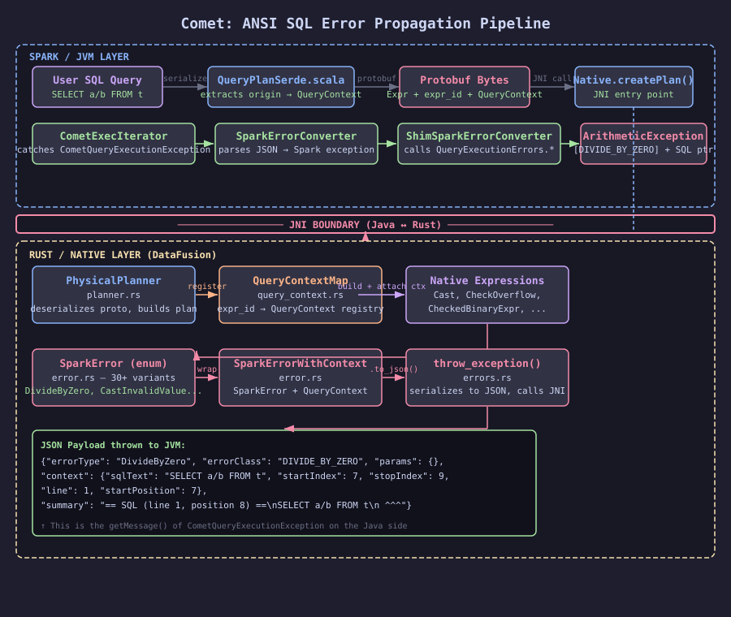
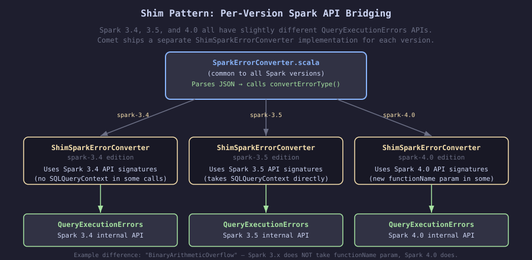
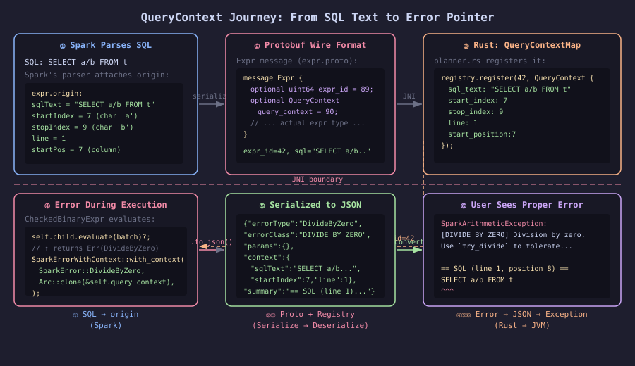

ANSI SQL Error Propagation in Comet#
Overview#
Apache Comet is a native query accelerator for Apache Spark. It runs SQL expressions in Rust (via Apache DataFusion) instead of the JVM, which is much faster. But there’s a catch: when something goes wrong — say, a divide-by-zero or a type cast failure — the error needs to travel from Rust code all the way back to the Spark/Scala/Java world as a proper Spark exception with the right type, the right message, and even a pointer to the exact character in the original SQL query where the error happened.
This document explains the end-to-end error-propagation pipeline.
The Big Picture#

SQL Query (Spark/Scala)
│
│ 1. Spark serializes the plan + query context into Protobuf
▼
Protobuf bytes ──────────────────────────────────► JNI boundary
│
│ 2. Rust deserializes the plan and registers query contexts
▼
Native execution (DataFusion / Rust)
│
│ 3. An error occurs (e.g. divide by zero)
▼
SparkError (Rust enum)
│
│ 4. Error is wrapped with SQL location context
▼
SparkErrorWithContext
│
│ 5. Serialized to JSON string
▼
JSON string ◄──────────────────────────────────── JNI boundary
│
│ 6. Thrown as CometQueryExecutionException
▼
CometExecIterator.scala catches it
│
│ 7. JSON is parsed, proper Spark exception is reconstructed
▼
Spark exception (e.g. ArithmeticException with DIVIDE_BY_ZERO errorClass)
│
│ 8. Spark displays it to the user with SQL location pointer
▼
User sees:
[DIVIDE_BY_ZERO] Division by zero.
== SQL (line 1, position 8) ==
SELECT a/b FROM t
^^^
Step 1: Spark Serializes Query Context into Protobuf#
When Spark compiles a SQL query, it parses it and attaches origin information to every expression — the line number, column offset, and the full SQL text.
QueryPlanSerde.scala is the Scala code that converts Spark’s physical execution plan into
a Protobuf binary that gets sent to the Rust side. It extracts origin information from each
expression and encodes it alongside the expression in the Protobuf payload.
The extractQueryContext function#
// spark/src/main/scala/org/apache/comet/serde/QueryPlanSerde.scala
private def extractQueryContext(expr: Expression): Option[ExprOuterClass.QueryContext] = {
val contexts = expr.origin.getQueryContext // Spark stores context in expr.origin
if (contexts != null && contexts.length > 0) {
val ctx = contexts(0)
ctx match {
case sqlCtx: SQLQueryContext =>
val builder = ExprOuterClass.QueryContext.newBuilder()
.setSqlText(sqlCtx.sqlText.getOrElse("")) // full SQL text
.setStartIndex(sqlCtx.originStartIndex.getOrElse(...)) // char offset of expression start
.setStopIndex(sqlCtx.originStopIndex.getOrElse(...)) // char offset of expression end
.setLine(sqlCtx.line.getOrElse(0))
.setStartPosition(sqlCtx.startPosition.getOrElse(0))
// ...
Some(builder.build())
}
}
}
Then, for every single expression converted to Protobuf, a unique numeric ID and the context are attached:
.map { protoExpr =>
val builder = protoExpr.toBuilder
builder.setExprId(nextExprId()) // unique ID (monotonically increasing counter)
extractQueryContext(expr).foreach { ctx =>
builder.setQueryContext(ctx) // attach the SQL location info
}
builder.build()
}
The Protobuf schema#
// native/proto/src/proto/expr.proto
message Expr {
optional uint64 expr_id = 89; // unique ID for each expression
optional QueryContext query_context = 90; // SQL location info
// ... actual expression type ...
}
message QueryContext {
string sql_text = 1; // "SELECT a/b FROM t"
int32 start_index = 2; // 7 (0-based character index of 'a')
int32 stop_index = 3; // 9 (0-based character index of 'b', inclusive)
int32 line = 4; // 1 (1-based line number)
int32 start_position = 5; // 7 (0-based column position)
optional string object_type = 6; // e.g. "VIEW"
optional string object_name = 7; // e.g. "v1"
}
Step 2: Rust Deserializes the Plan and Registers Query Contexts#
On the Rust side, PhysicalPlanner in planner.rs converts the Protobuf into DataFusion’s
physical plan. A QueryContextMap — a global registry — maps expression IDs to their SQL
context.
QueryContextMap (native/spark-expr/src/query_context.rs)#
pub struct QueryContextMap {
contexts: RwLock<HashMap<u64, Arc<QueryContext>>>,
}
impl QueryContextMap {
pub fn register(&self, expr_id: u64, context: QueryContext) { ... }
pub fn get(&self, expr_id: u64) -> Option<Arc<QueryContext>> { ... }
}
This is basically a lookup table: “for expression #42, the SQL context is: text=SELECT a/b FROM t, characters 7–9, line 1, column 7”.
The PhysicalPlanner registers contexts during plan creation#
// native/core/src/execution/planner.rs
pub struct PhysicalPlanner {
query_context_registry: Arc<QueryContextMap>,
// ...
}
pub(crate) fn create_expr(&self, spark_expr: &Expr, ...) {
// 1. If this expression has a query context, register it
if let (Some(expr_id), Some(ctx_proto)) =
(spark_expr.expr_id, spark_expr.query_context.as_ref()) {
let query_ctx = QueryContext::new(
ctx_proto.sql_text.clone(),
ctx_proto.start_index,
ctx_proto.stop_index,
...
);
self.query_context_registry.register(expr_id, query_ctx);
}
// 2. When building specific expressions (Cast, CheckOverflow, etc.),
// look up the context and pass it to the expression
ExprStruct::Cast(expr) => {
let query_context = spark_expr.expr_id.and_then(|id| {
self.query_context_registry.get(id)
});
Ok(Arc::new(Cast::new(child, datatype, options, spark_expr.expr_id, query_context)))
}
}
Step 3: An Error Occurs During Native Execution#
During query execution, a Rust expression might encounter something like division by zero.
The SparkError enum (native/spark-expr/src/error.rs)#
This enum contains one variant for every kind of error Spark can produce, with exactly the same error message format as Spark:
pub enum SparkError {
#[error("[DIVIDE_BY_ZERO] Division by zero. Use `try_divide` to tolerate divisor \
being 0 and return NULL instead. If necessary set \
\"spark.sql.ansi.enabled\" to \"false\" to bypass this error.")]
DivideByZero,
#[error("[CAST_INVALID_INPUT] The value '{value}' of the type \"{from_type}\" \
cannot be cast to \"{to_type}\" because it is malformed. ...")]
CastInvalidValue { value: String, from_type: String, to_type: String },
// ... 30+ more variants matching Spark's error codes ...
}
When a divide-by-zero happens, the arithmetic expression creates:
return Err(DataFusionError::External(Box::new(SparkError::DivideByZero)));
Step 4: Error Gets Wrapped with SQL Context#
The expression wrappers (CheckedBinaryExpr, CheckOverflow, Cast) catch the
SparkError and attach the SQL context using SparkErrorWithContext:
// native/core/src/execution/expressions/arithmetic.rs
// CheckedBinaryExpr wraps arithmetic operations
impl PhysicalExpr for CheckedBinaryExpr {
fn evaluate(&self, batch: &RecordBatch) -> Result<...> {
match self.child.evaluate(batch) {
Err(DataFusionError::External(e)) if self.query_context.is_some() => {
if let Some(spark_error) = e.downcast_ref::<SparkError>() {
// Wrap the error with SQL location info
let wrapped = SparkErrorWithContext::with_context(
spark_error.clone(),
Arc::clone(self.query_context.as_ref().unwrap()),
);
return Err(DataFusionError::External(Box::new(wrapped)));
}
Err(DataFusionError::External(e))
}
other => other,
}
}
}
SparkErrorWithContext (native/spark-expr/src/error.rs)#
pub struct SparkErrorWithContext {
pub error: SparkError, // the actual error
pub context: Option<Arc<QueryContext>>, // optional SQL location
}
Step 5: Error Is Serialized to JSON#
When DataFusion propagates the error all the way up through the execution engine and it
reaches the JNI boundary, throw_exception() in errors.rs is called. It detects the
SparkErrorWithContext type and calls .to_json() on it:
// native/core/src/errors.rs
fn throw_exception(env: &mut JNIEnv, error: &CometError, ...) {
match error {
CometError::DataFusion {
source: DataFusionError::External(e), ..
} => {
if let Some(spark_err_ctx) = e.downcast_ref::<SparkErrorWithContext>() {
// Has SQL context → throw with JSON payload
let json = spark_err_ctx.to_json();
env.throw_new("org/apache/comet/exceptions/CometQueryExecutionException", json)
} else if let Some(spark_err) = e.downcast_ref::<SparkError>() {
// No SQL context → throw with JSON payload (no context field)
throw_spark_error_as_json(env, spark_err)
}
}
// ...
}
}
The JSON looks like this for a divide-by-zero in SELECT a/b FROM t:
{
"errorType": "DivideByZero",
"errorClass": "DIVIDE_BY_ZERO",
"params": {},
"context": {
"sqlText": "SELECT a/b FROM t",
"startIndex": 7,
"stopIndex": 9,
"line": 1,
"startPosition": 7,
"objectType": null,
"objectName": null
},
"summary": "== SQL (line 1, position 8) ==\nSELECT a/b FROM t\n ^^^"
}
Step 6: Java Receives CometQueryExecutionException#
On the Java side, a thin exception class carries the JSON string as its message:
// common/src/main/java/org/apache/comet/exceptions/CometQueryExecutionException.java
public final class CometQueryExecutionException extends CometNativeException {
public CometQueryExecutionException(String jsonMessage) {
super(jsonMessage);
}
public boolean isJsonMessage() {
String msg = getMessage();
return msg != null && msg.trim().startsWith("{") && msg.trim().endsWith("}");
}
}
Step 7: Scala Converts JSON Back to a Real Spark Exception#
CometExecIterator.scala is the Scala code that drives the native execution. Every time it
calls into the native engine for the next batch of data, it catches
CometQueryExecutionException and converts it:
// spark/src/main/scala/org/apache/comet/CometExecIterator.scala
try {
nativeUtil.getNextBatch(...)
} catch {
case e: CometQueryExecutionException =>
logError(s"Native execution for task $taskAttemptId failed", e)
throw SparkErrorConverter.convertToSparkException(e) // converts JSON to real exception
}
SparkErrorConverter.scala parses the JSON#
// spark/src/main/scala/org/apache/comet/SparkErrorConverter.scala
def convertToSparkException(e: CometQueryExecutionException): Throwable = {
val json = parse(e.getMessage)
val errorJson = json.extract[ErrorJson]
// Reconstruct Spark's SQLQueryContext from the embedded context
val sparkContext: Array[QueryContext] = errorJson.context match {
case Some(ctx) =>
Array(SQLQueryContext(
sqlText = Some(ctx.sqlText),
line = Some(ctx.line),
startPosition = Some(ctx.startPosition),
originStartIndex = Some(ctx.startIndex),
originStopIndex = Some(ctx.stopIndex),
originObjectType = ctx.objectType,
originObjectName = ctx.objectName))
case None => Array.empty
}
// Delegate to version-specific shim
convertErrorType(errorJson.errorType, errorClass, params, sparkContext, summary)
}
ShimSparkErrorConverter calls the real Spark API#
Because Spark’s QueryExecutionErrors API changes between Spark versions (3.4, 3.5, 4.0),
there is a separate implementation per version (in spark-3.4/, spark-3.5/, spark-4.0/).

// spark/src/main/spark-3.5/org/apache/spark/sql/comet/shims/ShimSparkErrorConverter.scala
def convertErrorType(errorType: String, errorClass: String,
params: Map[String, Any], context: Array[QueryContext], summary: String): Option[Throwable] = {
errorType match {
case "DivideByZero" =>
Some(QueryExecutionErrors.divideByZeroError(sqlCtx(context)))
// This is the REAL Spark method that creates the ArithmeticException
// with the SQL context pointer. The error message will include
// "== SQL (line 1, position 8) ==" etc.
case "CastInvalidValue" =>
Some(QueryExecutionErrors.castingCauseOverflowError(...))
// ... all other error types ...
case _ => None // fallback to generic SparkException
}
}
The Spark 3.5 shim vs the Spark 4.0 shim differ in subtle API ways:
// 3.5: binaryArithmeticCauseOverflowError does NOT take functionName
case "BinaryArithmeticOverflow" =>
Some(QueryExecutionErrors.binaryArithmeticCauseOverflowError(
params("value1").toString.toShort,
params("symbol").toString,
params("value2").toString.toShort))
// 4.0: overloadedMethod takes functionName parameter
case "BinaryArithmeticOverflow" =>
Some(QueryExecutionErrors.binaryArithmeticCauseOverflowError(
params("value1").toString.toShort,
params("symbol").toString,
params("value2").toString.toShort,
params("functionName").toString)) // extra param in 4.0
Step 8: The User Sees a Proper Spark Error#
The final exception that propagates out of Spark looks exactly like what native Spark would produce for the same error, including the ANSI error code and the SQL pointer:
org.apache.spark.SparkArithmeticException: [DIVIDE_BY_ZERO] Division by zero.
Use `try_divide` to tolerate divisor being 0 and return NULL instead.
If necessary set "spark.sql.ansi.enabled" to "false" to bypass this error.
== SQL (line 1, position 8) ==
SELECT a/b FROM t
^^^
Key Data Structures: A Summary#
Structure |
Language |
File |
Purpose |
|---|---|---|---|
|
Protobuf |
|
Wire format for SQL location info |
|
Rust |
|
In-memory SQL location info |
|
Rust |
|
Registry: expr_id → QueryContext |
|
Rust |
|
Typed Rust enum matching all Spark error variants |
|
Rust |
|
SparkError + optional QueryContext |
|
Java |
|
JNI transport: carries JSON string |
|
Scala |
|
Parses JSON, creates real Spark exception |
|
Scala |
|
Per-Spark-version calls to |
Why JSON? Why Not Throw the Right Exception Directly?#
JNI does not support throwing arbitrary Java exception subclasses from Rust directly — you
can only provide a class name and a string message. The class name is fixed (always
CometQueryExecutionException), but the string payload can carry any structured data.
JSON was chosen because:
It is self-describing — the receiver can parse it without knowing the structure in advance.
It is easy to add new fields without breaking old parsers.
It maps cleanly to Scala’s case class extraction (
json.extract[ErrorJson]).All the typed information (error class, parameters, SQL context) can be round-tripped perfectly.
The alternative — throwing different Java exception classes from Rust — would require a separate JNI throw path for each of the 30+ error types, which would be much harder to maintain.
Why SparkError Has Its Own error_class() Method#
Each SparkError variant knows its own ANSI error class code (e.g. "DIVIDE_BY_ZERO",
"CAST_INVALID_INPUT"). This is used both:
In the JSON payload’s
"errorClass"field (so the Java side can pass it toSparkException(errorClass = ...)as a fallback)In the legacy
exception_class()method that maps to the right Java exception class (e.g."java/lang/ArithmeticException")
Diagrams#
End-to-End Pipeline#
QueryContext Journey: From SQL Text to Error Pointer#

Shim Pattern: Per-Version Spark API Bridging#
This document and its diagrams were written by Claude (Anthropic).